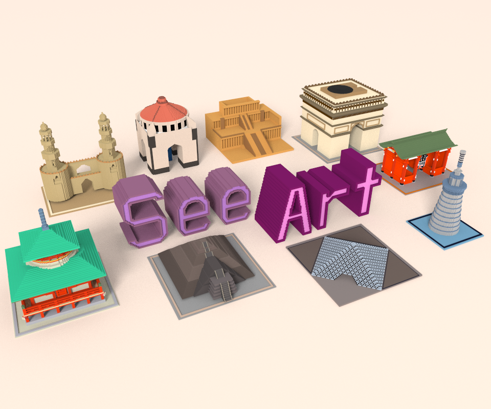

<mat-toolbar color="primary">
    <mat-toolbar-row>
        <button mat-button *ngIf="esProfesora" (click)="openSnackBar()">
             SeeArt
        </button>
        <button mat-button *ngIf="!esProfesora">
             SeeArt
        </button>
        <span class="example-spacer"></span>
        <div *ngIf="esProfesora">
            <button mat-button routerLink="/bienvenido" routerLinkActive="active">Inicio</button>
        </div>
        <div *ngIf="!esProfesora">
            <button mat-button routerLink="/" routerLinkActive="active">Iniciar sesión</button>
        </div>
        <div *ngIf="!esProfesora">
            <button mat-button routerLink="/registro" routerLinkActive="active">Registrar</button>
        </div>
        <div *ngIf="esProfesora">
            <button mat-button routerLink="/jugadores" routerLinkActive="active">Jugadores</button>
        </div>
        <div *ngIf="esProfesora">
            <button mat-button routerLink="/videojuegos" routerLinkActive="active">Videojuegos</button>
        </div>
        <div *ngIf="esProfesora">
            <button mat-button routerLink="/galeria" routerLinkActive="active">Galeria</button>
        </div>
        <div *ngIf="esProfesora">
            <button mat-raised-button color="warn" (click)="logout()">Cerrar sesión</button>
        </div>
    </mat-toolbar-row>
</mat-toolbar>